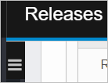
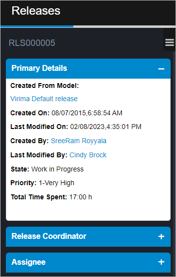
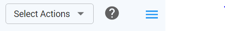
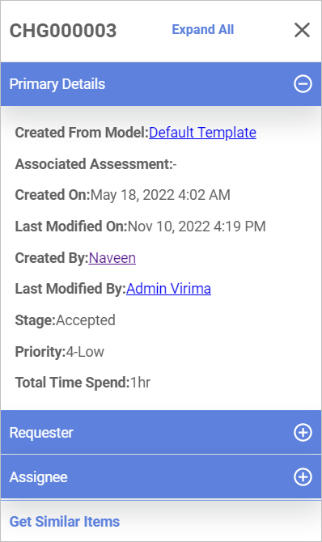

About ITSM
| Not all functions shown below are available to all users. Visibility and actions are based upon a user's role as defined through Access Management. If access is required, contact your System Administrator. |
This module contains the following functions:
Additional Information
When viewing certain windows, a panel is displayed that provides quick access to additional information.
V5
When a record is open, in the left pane, click the three lines:

When selected, the pane expands and shows information similar to the following:

To expand a closed section, click the plus + sign.
To collapse an open section, click the minus - sign.
To view corresponding information for selected items, click the text shown in blue. This is a hyperlink to the relevant information. For example, if the link for Last Modified By is clicked, the Access Management window displays the details for that user.
V6 INFORMATION NEEDED
When a record is open, in the upper right corner, click the three lines:

When selected, the pane expands and shows information similar to the following:

To expand a closed section, click the plus + sign.
To collapse an open section, click the minus - sign.
To view corresponding information for selected items, click the text shown in blue. This is a hyperlink to the relevant information. For example, if Last Modified By is clicked, the Access Management window displays the details for that user.